Taiki
Taiki · Hokkaido
Taiki
Highlighted on the Hokkaido map.
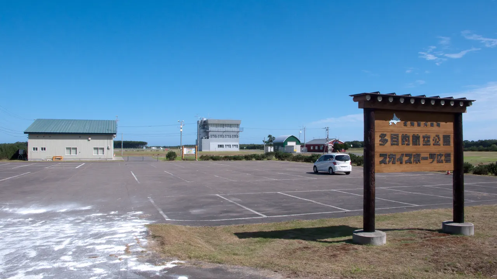
Stay
ホテルかしわ
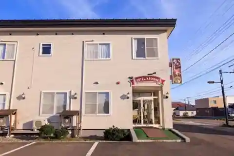
Hotel Kashiwa
Hotel in Taiki, Hokkaido.
MEMU EARTH HOTEL
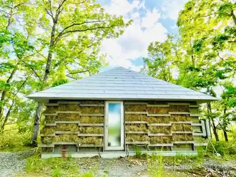
Memu Earth Hotel
Design hotel in Taiki, Hokkaido.
Moving Inn Tokachi 北の森
Moving Inn Tokachi Kita no Mori
Mobile-cabin hotel in Taiki, Hokkaido.
セキレイ舘
Sekireikan
Guesthouse in Taiki, Hokkaido.
大樹町緑町ゲストハウス
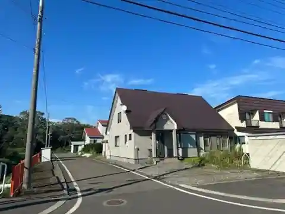
Taiki Midorimachi Guesthouse
Private guesthouse in Taiki, Hokkaido.
民泊どりふ
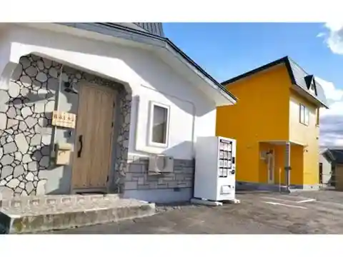
Minpaku Dorifu
Private guesthouse in Taiki, Hokkaido.
Dining
源ファーム
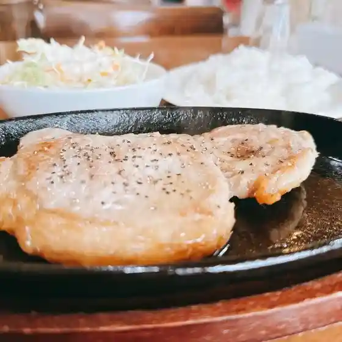
Gen Faamu
セキレイ館
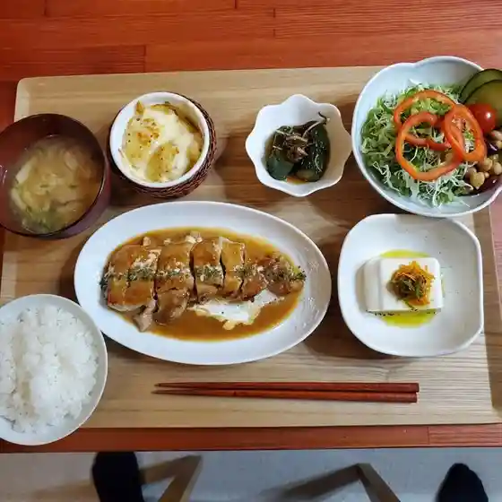
Sekirei Kan
中国料理 菜凜酒家
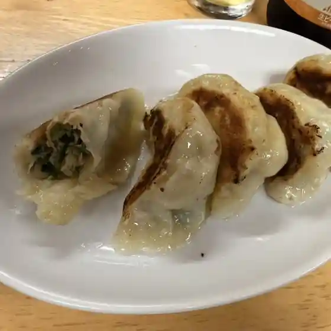
Chuugokuryouri Na Rin Shuka
ときわ食堂
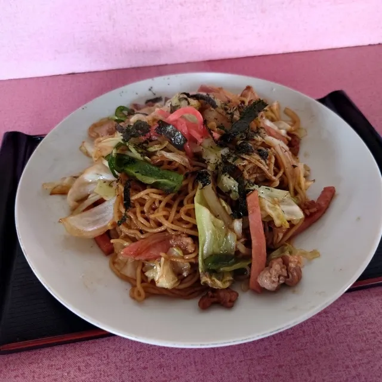
Tokiwa Shokudou
カフェ風土
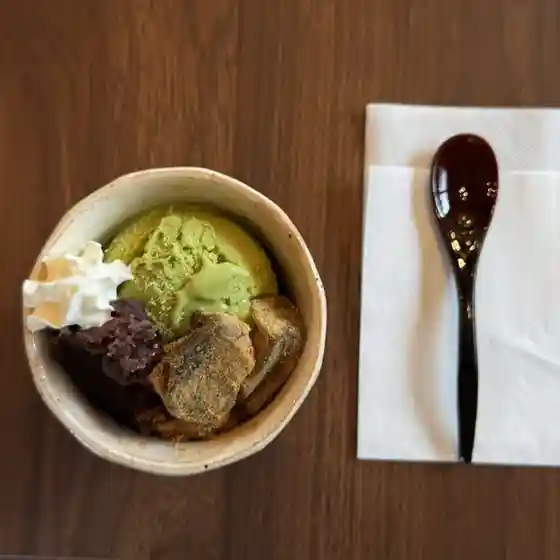
Kafe Fuudo
LAWSON 大樹町店
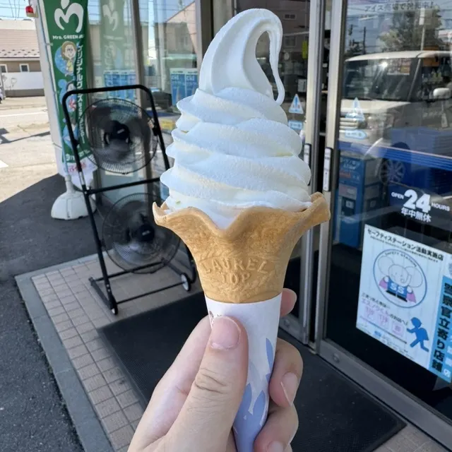
Lawson Taiju Machi Mise
彗星に碧
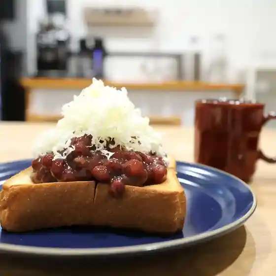
Suisei Ni Heki
陶
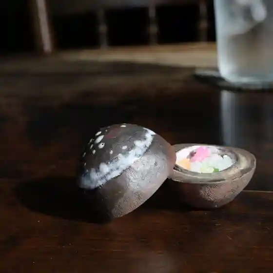
Tou
だいじゅ園 本店
Daiju Sono Honten
四季の味たんぽぽ
Shiki No Aji Tanpopo
いさり火
Isari Hi
そば乃 兎月
Soba No Usagi Gatsu
蝦夷マルシェ
Ezo Marushie
和風イタリアン ちょっと
Wafuu Itarian Chotto
半田ファーム
Handa Faamu
晩成温泉
Bansei Onsen
ダイニングバー ハル Daining Bar HARU
Dainingubaa Haru Daining Bar Haru
ホテルタイキ
Hoterutaiki
大衆食堂 MAMO
Taishuushokudou Mamo
サンジュリアン
Sanjurian
BAR "E"qual
Bar &Quot;E&Quot;Qual
赤門
Akamon
はまどり
Hamadori
夢がいっぱい牧場
Yume Gaippai Bokujou